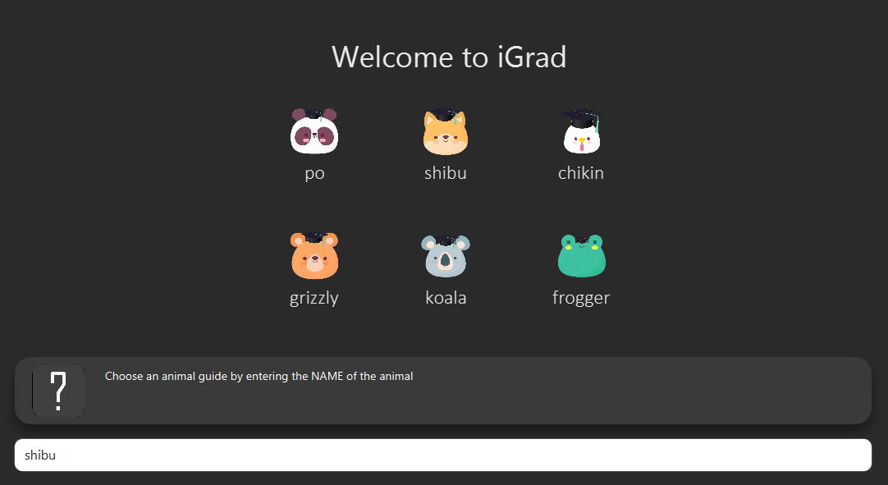
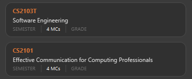

By: Team-iGrad Since: Feb 2020
1. Introduction
Sick of having tracking your university progress the manual way? Start getting rid of your Excel sheets and scribbled down notes and download iGrad right now!
What is iGrad?
iGrad is the app to track your university progress, for students who are frustrated with the limited features the university provides, by students who are frustrated by the limited features the university provides.
iGrad offers users the ability to create custom courses and graduation requirements, ensuring the maximum degree of flexibility when planning and keeping track of your progress
iGrad also retrieves data directly from NUS Mods, ensuring that module information is always up to date.
iGrad calculates your CAP at every step, ensuring you never have to use a CAP calculator again
Finally, the iGrad team is always open to feedback and suggestions from the public which will always be followed up on.
2. How to use this guide
You may proceed to Section 6, “Command List” if you would like to learn how to use each of the commands, and Section 9, “Cheat Sheet” if you would just like a list of all the commands for easy reference.
The figure below explains the symbols used throughout the user guide.
| Specifies the constraints of the command or situation. |
| Specifies expected command outcomes. |
| Specifies extra tips you can use when navigating through our app. |
| Specifies important things to take note of |
3. Features
This segment highlights the key features of iGrad.
3.1. Course Builder
iGrad was built with every NUS student in mind. Our custom course builder allows you to build the course of your dreams.
3.2. Modular Credits (MCs) Tracker
We are sick of counting our MCs at the beginning of every semester. Easily see how many MCs you have left in order to apply for graduation.
3.3. Cumulative Average Point (CAP) Tracker
No more googling CAP calculators. iGrad’s CAP tracker keeps track of your CAP at every step and even offers predictive services so you know how well you have to do in order to achieve your dream CAP.
4. Components
This segment contains details on the structure of iGrad.

4.1. Course
A course is simply a group of requirements. It is also how we keep track of your overall CAP and MCs.
4.2. Requirements
A requirement consists of at least one module. Fulfill all modules within a requirement to complete it.
4.3. Modules
A module is the building block of all other components. Mark your modules as done and give it a grade. You can also add optional memos to help you remember why you took the module.
5. Walkthrough
This segment details a simple tutorial on how to use the application.
-
Start up the application
-
Open up the application by opening the
iGrad.jarfile. -
Select an avatar by typing its name before pressing enter.
-
The avatar will act as your guide for the application.

-
-
Enter your course details
-
Course refers to the name of the course you are currently enrolled in.
-
Enter the name of your course in the format:
course add n/COURSE_NAME -
Eg.
course add n/Computer Science

-
-
Key in your graduation requirements
-
Requirements are categories for modules required in the entered course.
-
Enter your course graduation requirements in the format:
requirement add t/REQUIREMENT_TITLE u/MCS_REQUIRED -
Eg.
requirement add n/General Education u/20

-
-
Add modules to the tracker
-
Modules refer to modules that you have taken or are planning to take.
-
Enter modules into the system in the format:
module add n/MODULE_CODE t/MODULE_TITLE u/MCs -
Eg.
module add n/GER1000 t/Quantitative Reasoning u/4

-
-
Assign your modules
-
Assign modules under their respective requirements.
-
Enter assign in the format:
requirement assign REQUIREMENT_CODE n/MODULE_CODE -
Note: Requirement codes are generated by the system.
-
Eg.
requirement assign GE0 n/GER1000

-
-
Key in additional details for your modules
-
(Teri)


-
-
Mark a module as done and assign a grade to it
-
(Teri)


-
-
Track your MCs
-
(Teri)

-
-
View your CAP
-
(Teri)
-
-
Export your data
-
(Teri)


-
6. Command List
This segment contains a list of commands with examples that you can use to make full use of iGrad.
Take note of the following when using our commands:
| Commands with fields wrapped within square brackets (i.e. []) require at least one of these fields to be specified when using the command. This means that you need just specify one of these fields while others may be optional based on your usage. |
6.1. help
Displays a help message to the user. Lists all possible commands and provides a link to the user guide online.
Command Format
help
Expected Outcome
A popup for the list of all commands as well as the link to the user guide is shown.
INSERT POPUP PHOTO
|
6.2. course
Add, edit or delete your course. Find out how much CAP you need to maintain each semester to achieve your desired CAP.
Command Format
course add n/COURSE_NAME course edit [n/COURSE_NAME] [u/MCs] course delete n/COURSE_NAME course achieve c/DESIRED_CAP s/SEMESTERS_LEFT
Command Sample
Creating a course named "Computer Science"
course add n/Computer Science
Renaming your current course to "Information Systems"
course edit n/Information Systems
Removing your current course
course delete
Calculating the average grade needed to achieve a CAP of 4.50 with 2 semesters left
course achieve c/4.50 s/2
Constraints
|
Expected Outcome
| You should be able to see the added and/or modified course name in the top panel. For delete course, all data would be reset |
6.3. requirement
Add, edit or delete a graduation requirement.
Command Format
requirement add n/REQUIREMENT_TITLE u/MCS_REQUIRED requirement edit REQUIREMENT_CODE [n/NEW_REQUIREMENT_TITLE] [u/NEW_MCS_REQUIRED] requirement delete REQUIREMENT_CODE requirement assign REQUIREMENT_CODE [n/MODULE_CODE ...]
Command Sample
Adding a requirement named "Unrestricted Electives" which requires 32 MCs.
requirement add n/Unrestricted Electives u/32
Renaming requirement "Unrestricted Electives" to "Maths and Sciences", and changing the number of MCs required to 20.
requirement edit Unrestricted Electives n/Maths and Sciences u/32
Renaming requirement "Unrestricted Electives" to "Maths and Sciences".
requirement edit Unrestricted Electives n/Maths and Sciences
Changing number of required MCs for requirement "Unrestricted Electives" to 20.
requirement edit Unrestricted Electives u/20
Removing requirement named "Unrestricted Electives".
requirement delete Unrestricted Electives
Assigning modules to requirement.
requirement assign UE0 n/CS1101S n/CS1231S n/CS2030S n/CS2040S
Constraints
|
Expected Outcome
| You should be able to see the requirement created and/or edited in the main panel. |
6.4. Module
This section details each command used to manipulate modules. All module commands begin with the identifier
module followed by the action e.g. add.
All modules use the same parameters, listed in the table below:
| Name | Description | Example | Restrictions |
|---|---|---|---|
|
A module’s unique identifier |
CS2103T |
Must have two letters in the front, four numbers in the middle with an optional letter at the back |
|
A module’s title |
Software Engineering |
- |
|
The number of modular credits a module is worth |
4 |
Must be a number |
|
An academic semester. There are two semesters in a year |
Y1S1 |
Must be in the format Y?S* where ? represents a digit from 0 - 4 and * represents a digit from 1 -2 |
|
A module’s grade |
A+ |
Must be one of the following: A+, A, A-, B+, B-, C+, C, D, D+, F, S, U |
If, when issuing a command, the parameter restrictions are not strictly adhered to, you might come across some common errors. The following errors are generic and may be encountered when dealing with any module command:
| Parameter | Error Name |
|---|---|
|
Invalid Module Code |
|
Invalid Module Credits |
|
Invalid Semester |
|
Invalid Grade |
These errors can all be resolved by adhering to the restrictions detailed in Table 1, “Module Parameters”
6.4.1. Module Add
This command adds a module to the module list.
Purpose |
Adds a module |
Syntax |
|
Example |
|
How it Works
When you type in this command, we take the given values for the MODULE_CODE, MODULE_TITLE, MODULE_CREDITS and optionally, the SEMESTER,
and fill in those fields. We do not check if the given MODULE_CODE or MODULE_TITLE refer to actual modules offered by NUS. However, the restrictions stated in the module parameters table still apply.
Table 4, “Module Add Error Reference” lists errors you might encounter after issuing this command:
| Name | Message | Explanation | Solution |
|---|---|---|---|
Duplicate Module Error |
Duplicate Detected |
The module you are attempting to add already exists in the module list |
Delete the existing module in the list and try again |
Tutorial
Follow these steps to get a clearer idea of how this command works
| For this tutorial, actual values will be given instead of placeholders. Undo or Delete objects created from this tutorial by using the appropriate commands |
-
Check that you do not have the modules with
MODULE_CODECS2103T and CS2101 in your list of modules -
Type the following into the command box
module add n/CS2103T u/4 t/Software Engineeringand press enter -
Type the following into the command box
module add n/CS2101 u/4 t/Effective Communication for Computing Professionalsand press enter -
The message in the response box should change and you should see the following in the module panel:
Figure 1. Modules CS2103T and CS2101 successfully added
6.4.2. Module Auto Add
This command adds a module to the module list. The module information is taken
from the NUSMods API and includes the MODULE_CODE, MODULE_TITLE
and MODULE_CREDITS.
Purpose |
Adds a module from NUSMods |
Syntax |
|
Example |
|
How it Works
Do not miss out the -a flag
|
When you type in this command, a request is made to NUSMods API. More specifically, we visit the module page and ask for the information provided there. An example page can be found here.
| We try to get the module information from the current academic year. However, this might not always be possible as NUS might not have released the module details. As a contingency, we retrieve the module information from the previous academic year. |
In general, using this command speeds up the process of module addition greatly. However, as we have to make a request to an external webpage, the time taken to process the request might be considerably longer.
| After issuing the command, the app might seem to freeze. Not to worry! It is merely processing your request. Please be patient when executing this command, especially when attempting to add a large number of modules. |
This command also supports batch processing and you can add multiple modules, with the necessary information all filled in, by issuing a single command. In the case where adding a single module in a batch of modules raises an error, we skip that module and let you know what went wrong.
You can add up to 10 modules at once! Try this: module add n/CS1101 n/CS1231 n/CS2030 n/CS2040 n/CS2100 n/CS2103T n/CS2105 n/CS2106 n/CS3230 n/CS3219 -a
|
Table 6, “Module Auto Add Error Reference” lists the errors you might encounter after issuing this command:
| Name | Message | Explanation | Solution |
|---|---|---|---|
Duplicate Module Error |
Duplicate Detected |
The module you are attempting to add already exists in the module list |
Delete the existing module in the list and try again |
Module Not Found Error |
Module Not Found |
The module you are attempting to add could not be found on the NUSMods API |
Use the command Section 6.4.1, “Module Add” instead |
Module Overload Error |
Module Overload Error |
You attemped to add too many modules. The limit is 10 |
Divide the list of modules into smaller batches of size less than 10 and try again |
Connection Error I |
Connection Error |
You are not connected to the internet |
Whilst all other commands work offline. You need an internet connection to issue this command. Go online before trying again |
Connection Error II |
Connection Error |
The NUSMods API server is down |
Use the command module add instead or wait until the NUSMods API server is restored |
Tutorial
Follow these steps to get a clearer idea of how this command works
| For this tutorial, actual values will be given instead of placeholders. Undo or Delete objects created from this tutorial by using the appropriate commands |
-
Check that you do not have the modules with
MODULE_CODECS2103T and CS2101 in your list of modules -
Type the following into the command box
module add n/CS2103T n/CS2101 -aand press enter -
Wait for up to 5 seconds
-
The message in the response box should change and you should see the following in the module panel
Figure 2. Modules CS2103T and CS2101 successfully added from NUSMods
Additional Information
We are also able to retrieve information pertaining to a module’s prerequisites and preclusions. However, as our app can function as a module planner in addition to tracking your graduation requirements, we do not prevent you from adding modules that have unfulfilled prerequisites but instead, simply show a warning.
| As the prerequisites and preclusions from NUSMods do not follow any standard formatting, the warning messages shown might not always be accurate. This is due to a difficulty of interpreting the data given by NUSMods. This remains a BETA feature and we hope to upgrade it in time. |
6.4.3. Module Done
This command marks a module as done by giving it a grade and optionally, a semester.
Purpose |
Marks a module as done |
Syntax |
|
Example |
|
How it Works
When you issue the command, we give your module the grade, and optionally the semester, that you provided. This helps us keep track of both your CAP and the number of semesters you have left before graduating.
In order to calculate your CAP, we use a known algorithm which is guaranteed to be accurate. To see what semester you are currently at, we take the latest semester given to a module which has been marked as done. From that, we are able to tell you how many semesters you have left.
| We do not currently allow the input of special terms. As a workaround, for modules taken during special term, you could input the most recent semester instead |
Table 8, “Module Done Error Reference” lists the errors you might encounter after issuing this command:
| Name | Message | Explanation | Solution |
|---|---|---|---|
Module Not Found Error |
Module Not Found |
The module you are attempting to mark as done does not exist in the module list |
Add the module you wish to mark as done and try again |
Tutorial
| For this tutorial, actual values will be given instead of placeholders. Undo or Delete objects created from this tutorial by using the appropriate commands |
Ensure that you have the module CS2103T in the module list
-
Type the following into the command box
module done CS2103T g/A s/Y4S1 -
The message in the response box should change and you should see the following
 Figure 3. Modules CS2103T successfully given a grade and a semester
Figure 3. Modules CS2103T successfully given a grade and a semester
6.4.4. Module Edit
This command edits the editable fields in a module which include the MODULE_TITLE, MODULE_CREDITS, SEMESTER.
Although it is possible to edit the fields as listed, it is unadvisable unless you made a mistake while keying
in the values.
Purpose |
Edits a module |
Syntax |
|
Example |
|
How it Works
When you issue the command, we replace the fields provided with the given values. You are able to change the values as you wish as long as they follow the restrictions as listed in the parameters table.
Table 10, “Module Edit Error Reference” lists the errors you might encounter after issuing this command:
| Name | Message | Explanation | Solution |
|---|---|---|---|
Module Not Found Error |
Module Not Found |
The module you are attempting to edit does not exist in the module list |
Instead of editing a module that does not exist, try adding a new one! |
Tutorial
| For this tutorial, actual values will be given instead of placeholders. Undo or Delete objects created from this tutorial by using the appropriate commands |
Ensure that you have the module CS2103T in the module list
-
Type the following into the command box
module edit CS2103T t/Hardware Engineering s/Y1S1 u/8 -
The message in the response box should change and you should see the following
 Figure 4. Modules CS2103T successfully given a grade and a semester
Figure 4. Modules CS2103T successfully given a grade and a semester
6.4.5. Module Delete
This command deletes a module from the module list.
Purpose |
Deletes a module |
Syntax |
`module delete MODULE_CODE`https://xxx[] |
Example |
|
How it Works
The module that you wish to delete is completely removed from the module list.
Restoring the module is only possible using the undo command which would only work if delete was the last issued command.
|
Table 12, “Module Delete Error Reference” lists the errors you might encounter after issuing this command:
| Name | Message | Explanation | Solution |
|---|---|---|---|
Module Not Found Error |
Module Not Found |
The module you are attempting to delete does not exist in the module list |
Your problem is your solution! |
Tutorial
| For this tutorial, actual values will be given instead of placeholders. Undo or Delete objects created from this tutorial by using the appropriate commands |
Ensure that you have the module CS2103T in the module list
-
Type the following into the command box
module delete CS2103T -
The message in the response box should change and you should see that the module CS2103T disappears from the module list
6.4.6. Module Filter
This command allows you to find your modules by various parameters. You can filter the
complete module list by SEMESTER, MODULE_CREDITS and GRADE.
Purpose |
Displays a module list filtered based on the given parameters |
Syntax |
|
Example |
|
How it Works
Two options are provided for you:
[Option 1] Displays modules that match all provided parameters
or
[Option 2] Displays modules that match at least one of the provided parameters.
If the flag -o is included at the end of the command, Option 2 will be chosen. Otherwise, the default option is Option 1.
In order to display all modules once again, simply type module filter. This will display an unfiltered module list containing all modules.
|
There are no notable errors to list. If wrong parameters are given, the app will simply
display the unfiltered module list. However, you should always take note of what filters are currently in place. If you
are unable to find some modules after using this command, please reset the display by typing in module filter.
If you
are unable to find some modules after using this command, please reset the display by typing in module filter.
|
Tutorial
Ensure that the following modules are in the module list:
| Module Code | Credits | Semester | Grade |
|---|---|---|---|
CS2103T |
4 |
Y1S1 |
A |
CS2101 |
4 |
Y1S2 |
B |
CS2040 |
6 |
Y2S1 |
C |
-
Retrieving modules which have 4
CREDITS-
Type
module filter u/4into the command box -
The message in the response box should change and you should see the modules CS2103T and CS2101 in the module panel
-
-
Retrieving modules which have either
SEMESTERY1S2 orGRADEC-
Type
module filter s/Y1S1 g/B -o -
The message in the response box should change and you should see the modules CS2101 and CS2040 in the module panel
-
Additional Information
| This section contains information which requires prior knowledge of discrete mathematics or more specifically, logical operators |
The flag -o, is present, sets the logical operator used in concatenating the parameters as "or". The default logical operator used is "and".
'''
6.5. Export
This command exports your data to a comma-separated values (.csv) file. This file can then be submitted to the relevant administration for processing of Leave of Absence (LOA), exchange programmes or internship applications.
Purpose |
Exports your data to a .csv file |
Syntax |
|
Example |
|
How it Works
We write your data to a .csv file study_plan.csv using the modules you have added and include the fields MODULE_CODE, MODULE_TITLE, SEMESTER and CREDITS.
| Modules that have not been tagged with a semester will not be written |
After issuing the command, you will be able to find the file in the same folder as the app’s executable.
| For example, if the app is stored in your Desktop folder, the file study_plan.csv will be created in the Desktop folder as well |
Table 15, “Export Error Reference” lists the errors you might encounter after issuing this command:
| Name | Message | Explanation | Solution |
|---|---|---|---|
Write Error |
Unable to write to file |
You have the file open. The system is unable to write to an open file |
Close the file and try again |
Data Not Found Error |
Nothing to write |
You do not have any modules tagged with a semester |
Tag at least one module with a semester and try again |
6.6. Exit
This command assists you in exiting the program.
Purpose |
Exits the program |
Syntax |
|
Example |
|
Additional Information
You can also exit the program by clicking the close icon on the top right hand corner of the application’s window.
7. Version 2.0
This sections details features that would be packaged with the next release
7.1. Module Suggester
Using tried and tested recommendation algorithms such as collborative filtering, we would be able to automatically suggest to you what modules to take next.
Purpose |
Suggests modules to take |
Syntax |
|
Example |
|
7.2. Integration with NUSMods
We plan to integrate with popular timetabling application NUSMods so that you can manage all aspects of your academics in one place.
8. FAQs
I’m not an NUS student. Can I still use iGrad?
As long as your university follows a similar hierachical structure! However, we will be unable to provide features such as validation from NUSMods.
9. Cheat Sheet
This segment contains all the commands detailed in this guide in a consolidated list.
help
course add n/COURSE_NAME
course edit [n/COURSE_NAME] [u/MCs]
course delete COURSE_NAME
course achieve c/DESIRED_CAP
requirement add n/REQUIREMENT_TITLE u/MCS_REQUIRED
requirement edit REQUIREMENT_CODE [n/REQUIREMENT_TITLE] [u/MCS_REQUIRED]
requirement delete REQUIREMENT_CODE
requirement assign REQUIREMENT_CODE [n/MODULE_CODE …]
module add n/MODULE_CODE n/MODULE_TITLE u/MCs [n/DESCRIPTION] [s/SEMESTER] [g/GRADE] [m/MEMO_NOTES]
module edit MODULE_CODE [n/MODULE_CODE] [n/MODULE_TITLE] [n/DESCRIPTION] [u/MCs] [s/SEMESTER] [g/GRADE] [m/MEMO_NOTES]
module delete MODULE_CODE
module done MODULE_CODE g/GRADE
undo
export
exit
10. Glossary
| Terms | Definition |
|---|---|
Course |
A course is the entire programme of studies required to complete a university degree |
Graduation requirement |
Requirements specified by the university in order for a student to graduate |
Module |
Each module of study has a unique module code consisting of a two- or three-letter prefix that generally denotes the discipline, and four digits, the first of which indicates the level of the module |
Cumulative Average Point (CAP) |
The Cumulative Average Point (CAP) is the weighted average grade point of the letter grades of all the modules taken by the students. |
Semester |
A semester is a part of the academic year. Each semester typically lasts 13 weeks in NUS. |
Modular Credits (MCs) |
A modular credit (MC) is a unit of the effort, stated in terms of time, expected of a typical student in managing his/her workload. |
NUSMods |
A timetabling application built for NUS students, by NUS students. Much like this iGrad! |
Handy Links